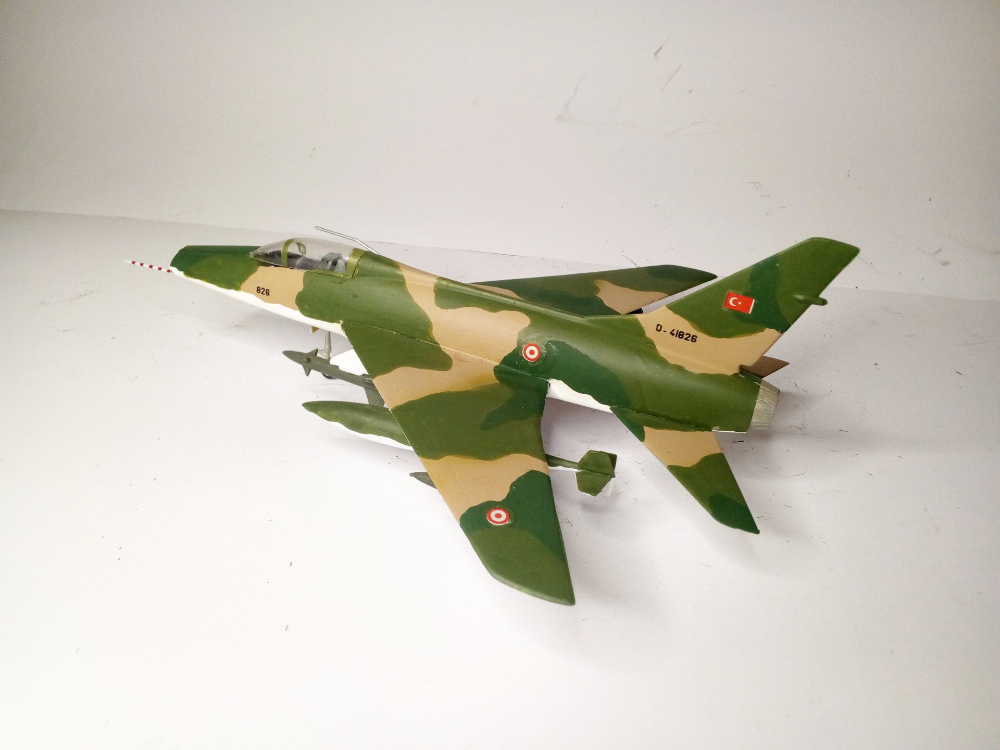
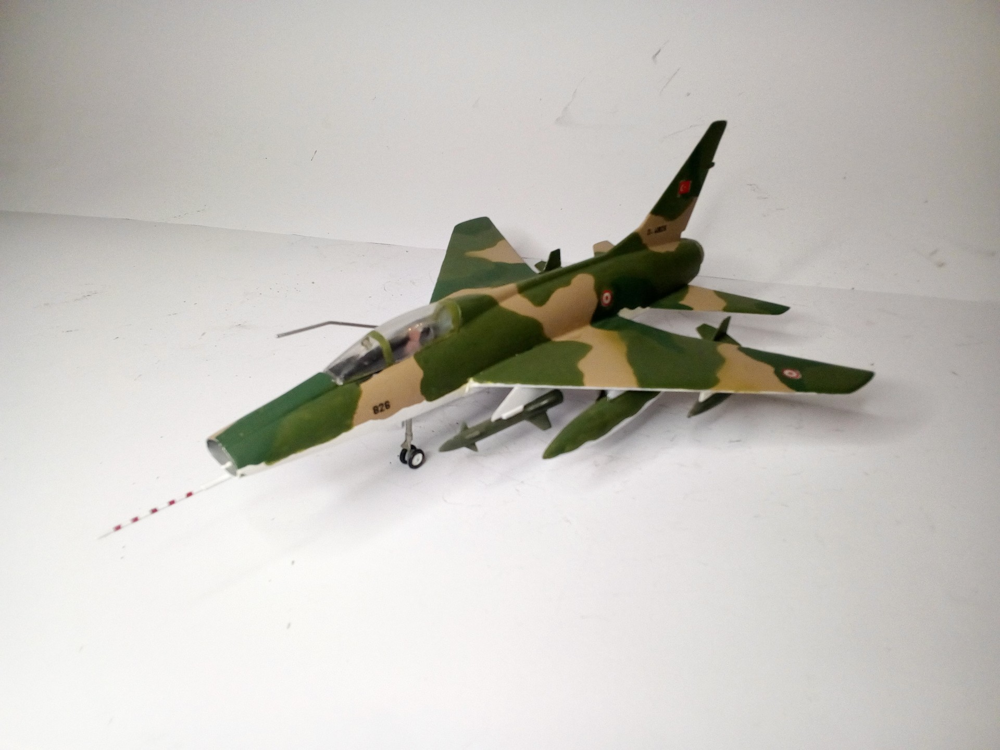
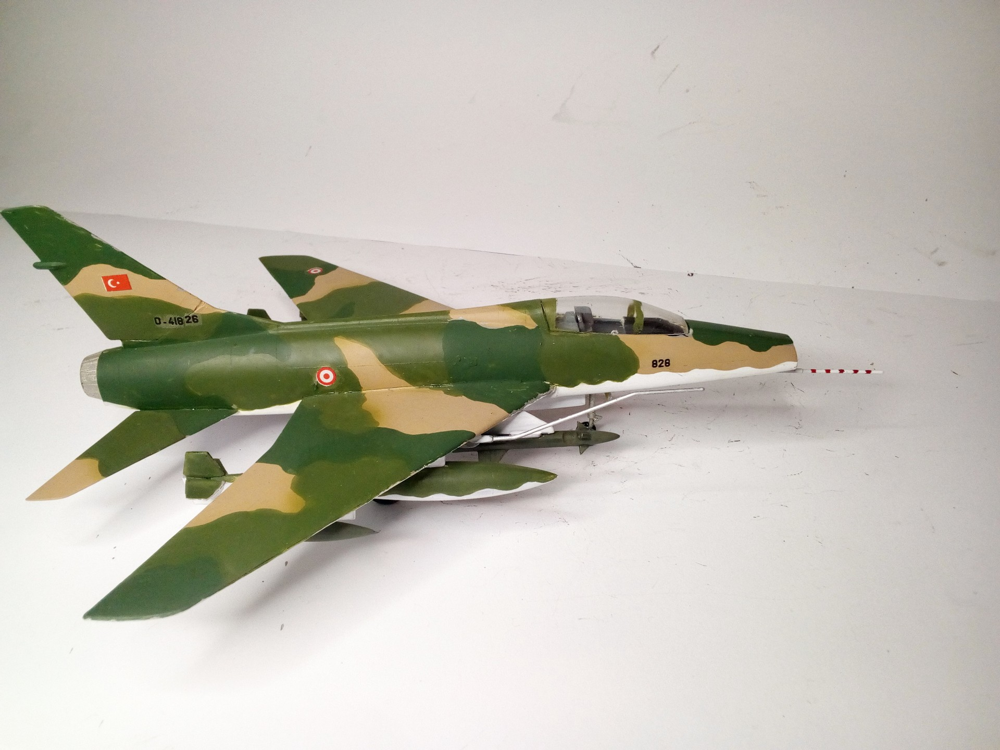

Aerei · scale model archive
North American F100 C Super Sabre
North American F100 C Super Sabre — Kit: PM Models, Scale: 1/72. 132 Sq 3 jet AB Turkish Air Force1975 #1/72 #PM Models

Photo gallery


English description
132 Sq 3 jet AB Turkish Air Force1975
#1/72 #PM Models
Descrizione italiana
132 Sq 3 jet AB Turkish Air Force1975.
#1/72 Modellos.